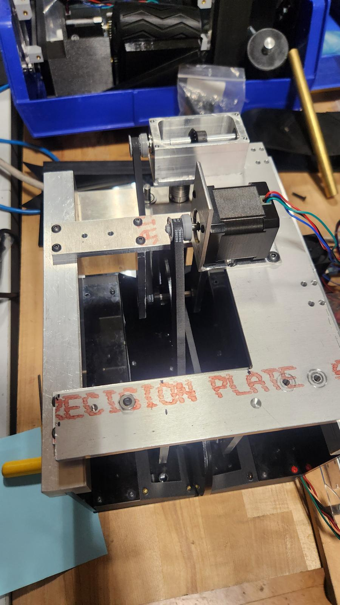
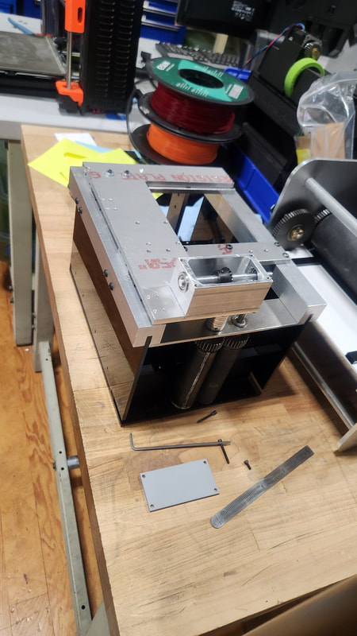
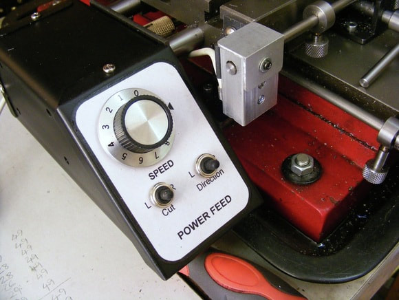
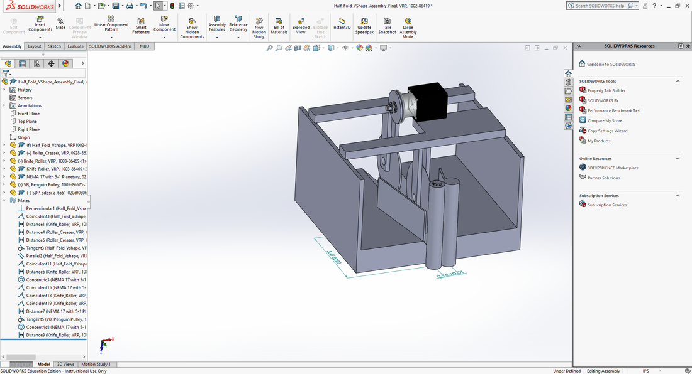
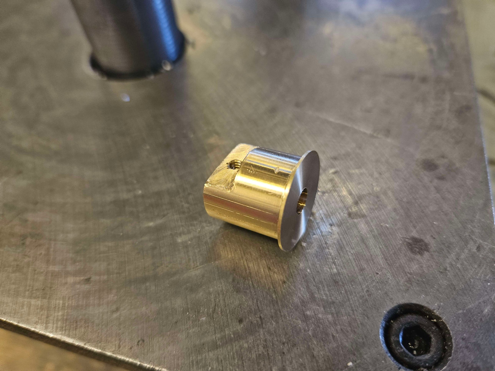
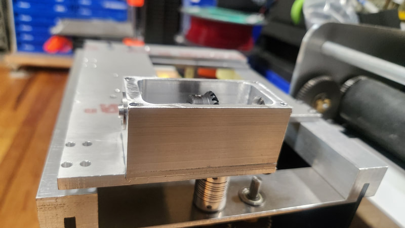
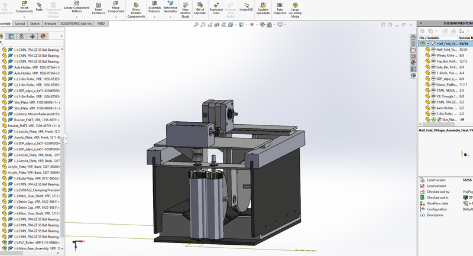
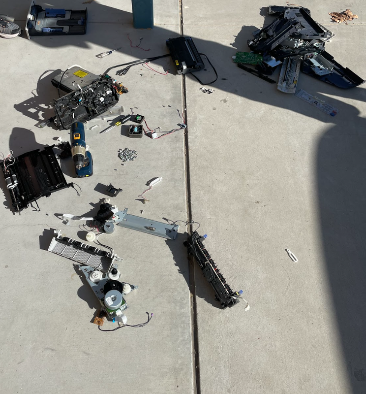

02 // MECHANISMS & POWER TRANSMISSION · DPEA (AUG 2023 – JUN 2024)
Senior Capstone: Origami Penguin Folder
A year-long, four-person project at the Dos Pueblos Engineering Academy to automate the folds of an origami penguin. I owned the half-fold mechanism—from CAD and manual machining to troubleshooting a miter gearbox that initially ran backwards.
System Overview & Subsystem Ownership
Modular roller-and-gearbox module built to execute the half-fold stage of a multi-station paper-folding machine.
Redesigned output shaft geometry places the driven bevel gear on the proper side of the pinion mesh, driving the brass-inserted & Delrin rollers inward to crease the half-fold.

Completed half-fold mechanism, overhead view.

Half-fold module assembled and wired on the workbench.
Our goal was to design and build a purely mechanical system from scratch capable of folding paper into an origami penguin. After early full-machine concepts proved too difficult to test in parallel, we split the sequence into modular stations. By the end of the year, our team integrated three working prototypes that reliably executed the first three sequential folds.
I owned the half-fold mechanism end to end: SolidWorks modeling, tolerance stack-up, parts sourcing, manual lathe and mill fabrication, electronics integration, and root-cause debugging when our initial gearbox kinematics ran in reverse.
Engineering Goals
Develop precision manual machining skills, including edge-finder setups, V-block work, and tight shoulder tolerances on the Hardinge lathe and vertical mills.
Build and document a multi-part mechanical drive in SolidWorks with fabrication drawings and nested DXF profiles.
Write microcontroller logic to sequence DC drive motors across connected subsystems.
Define and align mechanical interfaces with three teammates' modules on a fixed academic schedule.
Development Timeline & Iteration Log
LOG // 01
August – September 2023
Foundation Skills & Hardware Teardown
The year began in product development with shop qualification: mill power-feed setups and multi-configuration collet stops on the Hardinge lathe. As a team warm-up, we designed and fabricated a shop tool-wall French cleat using CAD, the router, manual lathe, and laser cutter.
Once we committed to the automated origami machine, we tore down a salvaged office printer to study how commercial rollers, timing belts, and gear trains handle sheet-paper friction and alignment without jamming.
Hardinge lathe setup during shop qualification.

Mill power-feed control box, auto-feed training.Custom-machined collet stop assembly.Shop tool-wall French cleat, CAD model.
LOG // 02
October – December 2023
Modular Architecture & Miter Gearbox Design
Early tests with flat folding plates failed because paper carries natural curvature and fiber memory, resisting simple creasing without positive roller nip. In October, we pivoted from a single monolithic frame to a modular architecture so each teammate could prototype and test one folding stage independently.
Through November, I iterated through three versions of the half-fold carriage to simplify assembly access. In December, I tackled the primary kinematic challenge: converting vertical shaft rotation from the main drive into horizontal counter-rotation at the folding rollers. Working with our faculty mentor, I designed a custom 90° miter gearbox to package the drive cleanly above the paper path.

Half-fold mechanism, early SolidWorks assembly.Custom 90° miter gearbox, CAD assembly.
LOG // 03
January – March 2024
CAD Finalization & Digital Fabrication
I finalized the fabrication CAD and nested DXF profiles for laser-cut acrylic plates onto a single sheet to minimize material waste. When a corrupted STL export shifted mounting holes on my 3D-printed base brackets, I built a physical cardboard template to verify true hole centers and updated the parametric CAD model before re-printing.
I also re-balanced the miter gearbox layout to improve weight distribution across the top plate. Because the original hex drive shaft caused inconsistent gear runout, I switched to a precision round shaft with flatted set-screw seats and 3D-printed matched D-bore timing pulleys.
Laser-cut acrylic parts verified against DXF print.Correcting mounting hole locations on the mill.Roller and timing-pulley subassembly, CAD.Acrylic mounting plate, dimensioned drawing.
LOG // 04
February – April 2024
Precision Machining & Fixture Work
I turned brass roller inserts on the Hardinge lathe using custom chucking setups to hold tight shoulder concentricity, and used V-block fixtures on the vertical mill for cross-drilling round shafts. When a keyway broach bound inside the steel pulleys, I traced the issue to an undersized pilot bore, re-drilled to the proper minor diameter, and finished the cut cleanly.
In March, I machined the passive Delrin rollers and fitted the motor bracket. Because the extruded aluminum L-stock had an internal fillet radius that interfered with the motor face, I hand-filed and lapped the inside corner square until the motor mounted flush.

Lathe-turned brass roller insert.

Machined aluminum housing and bearing bore.Bearing mount retention detail, CAD.Delrin passive roller assembly, CAD.Motor mount bracket, CAD model.
LOG // 05 · ROOT-CAUSE DEBUG
April – June 2024
Assembly & Reversed-Gearbox Root-Cause Analysis
A pitch miscalculation on my initial bill of materials resulted in ordering transmission belts that were slightly too long. While waiting for replacements, I matched spare shop belts by tooth pitch and width and prepared backup 3D-printed pulleys so mechanical testing wouldn't stall.
In May, we powered up the fully assembled prototype—and the first test failed. The rollers spun cleanly, but ejected the paper backward instead of feeding it into the crease zone. Tracing the kinematics through the 90° miter gearbox revealed that the driven bevel gear was mounted on the opposite side of the pinion mesh, reversing output shaft rotation. I redesigned the output shaft geometry, machined a new shaft, installed the corrected belts, and verified positive paper feed and creasing on the bench.

Final half-fold mechanism, SolidWorks assembly.Completed assembly side elevation, CAD.
LOG // 06 · SYSTEMS INTEGRATION
Late May – June 2024
Cross-Module Integration & Public Showcase
During final integration, I built a magnetic coupling interface linking my teammate's paper-transfer stage directly into my half-fold inlet. When a dimensional mismatch appeared on one teammate's 3D-printed baseplate, we adjusted mounting slots and machined brass inserts together on the shop floor to bring all stations onto a shared datum height.
In June, we demonstrated all three connected prototypes live for elementary students and 9th–11th grade peers, showing each mechanical fold in sequence from flat sheet to penguin base.
Paper transfer and half-fold modules coupled on the demo table.Four-student capstone team at the year-end showcase.
Outcomes & Engineering Takeaways
Breaking a complex kinematic problem into modular, independently testable stages allowed our four-person team to deliver three working mechanical prototypes that execute the first three folds of an origami penguin. Full CAD assemblies, dimensioned prints, and build notes were archived so a future capstone team can add the remaining folding stages.
Key Lessons Learned
Verify kinematics on real hardware: A single mirrored gear placement in CAD inverted our entire roller feed direction—physical bench testing caught what visual CAD checks missed.
Double-check vendor datasheets: Verifying belt pitch length and pulley center-to-center distance before ordering saves weeks of schedule margin.
Interface control is real systems engineering: Agreeing early on shared datum heights and magnetic coupling tolerances made multi-student integration possible.
Design for assembly: Leaving wrench clearance and accessible set-screw flats dramatically speeds up iterative debugging.
SolidWorks Assemblies & Prints
90° Miter Gearbox Design
Hardinge Lathe & Manual Mill
Laser Cutting (DXF)
FDM 3D Printing
Root-Cause Analysis
Full four-module system lineup at the DPEA engineering showcase.
Build & Fabrication Archive
Salvaged printer teardown, roller and gear study.

Salvaged printer teardown, drive components.Laser-cut parts checked against reference print.Laser-cut parts, machinist-square check.